1.6 Simple deductive proof2.12 Polynomial functions: factor and remainder theorems, sum and product of roots2.7 Solutions of quadratic equations and inequalities, discriminant and nature of roots1.12 Complex numbers in Cartesian form and the complex plane
Question
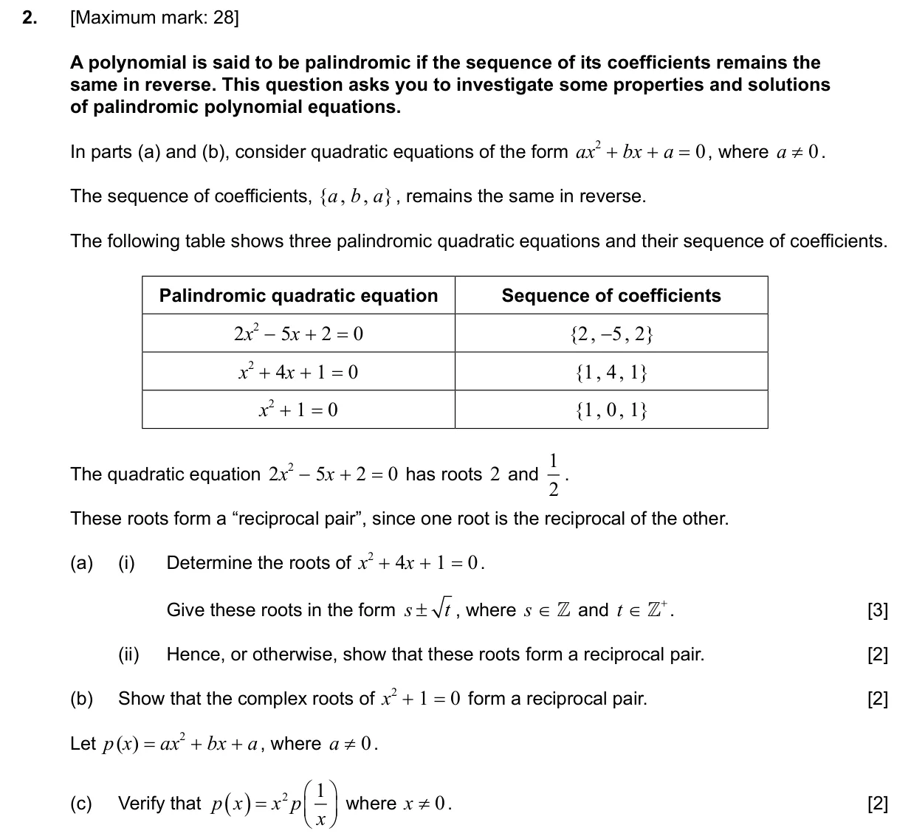
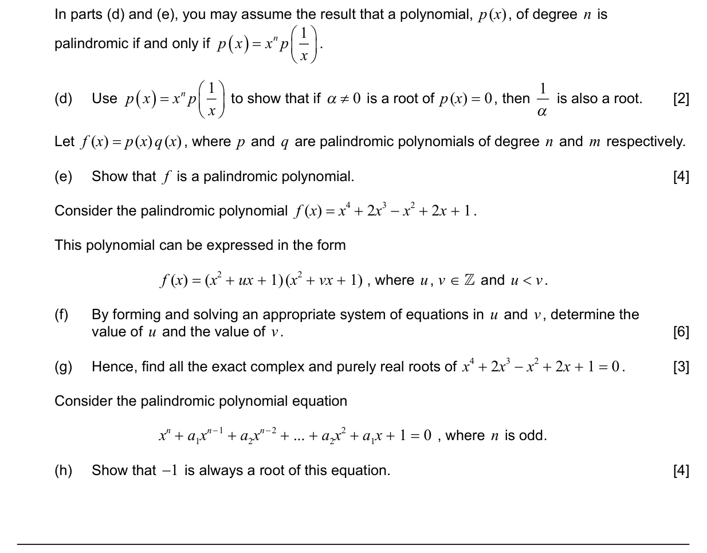
Markscheme
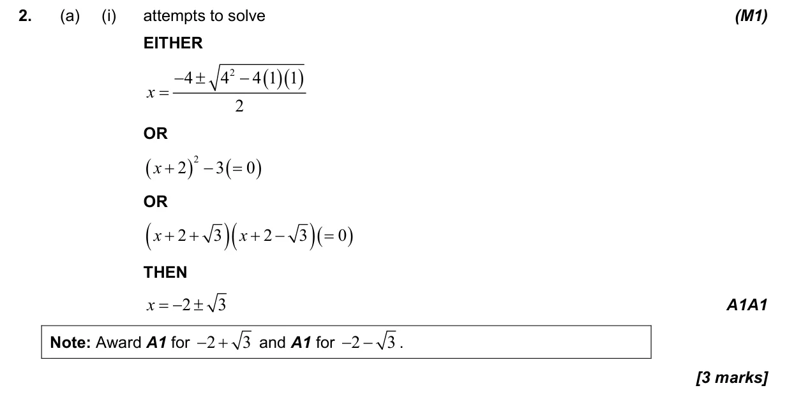
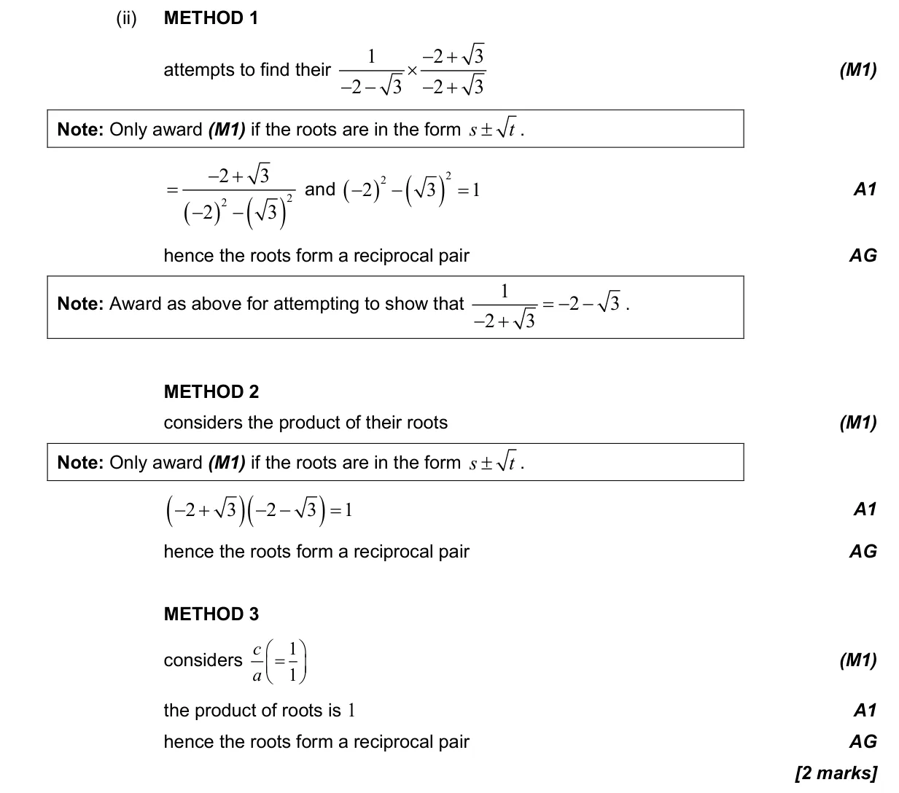
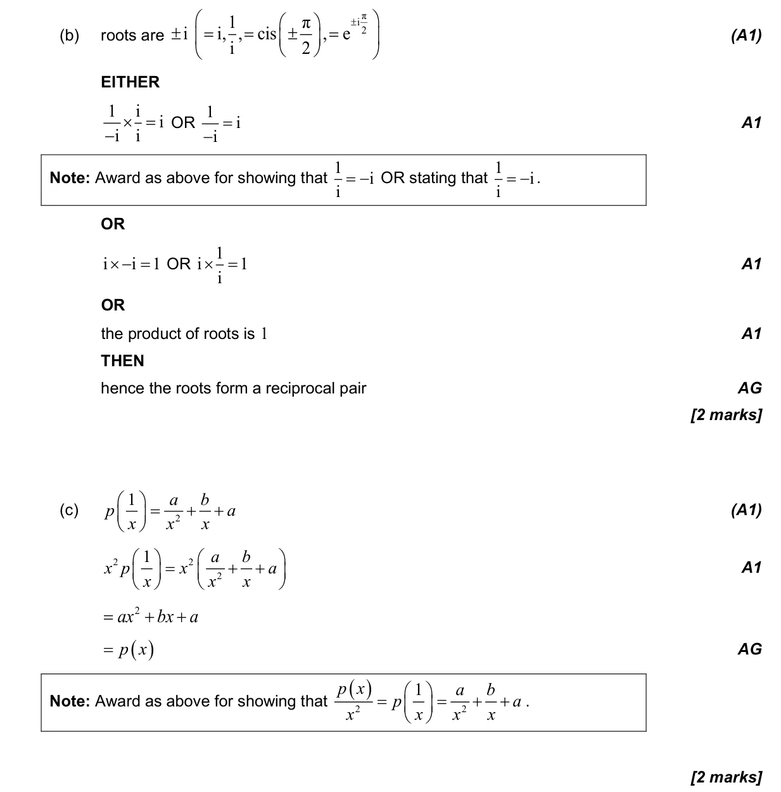
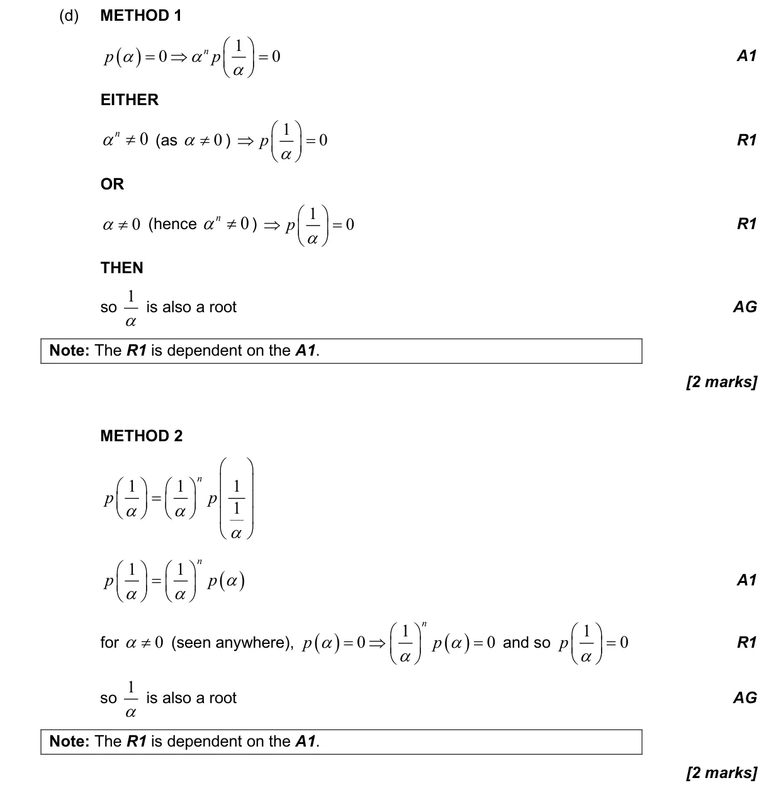
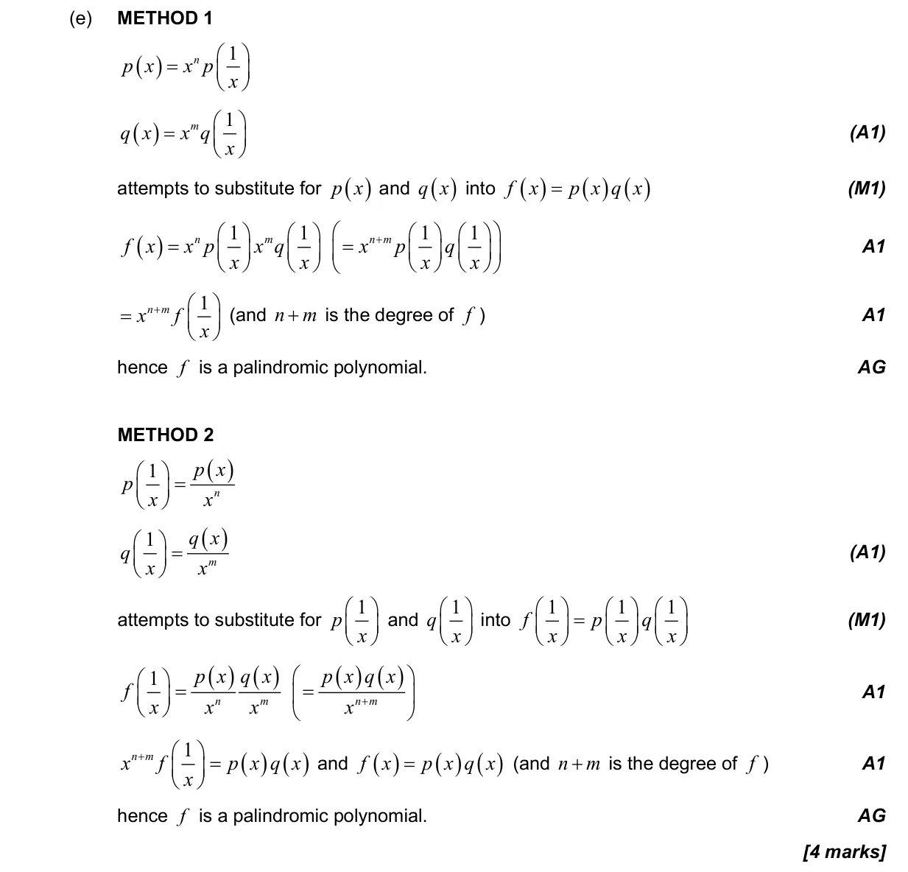
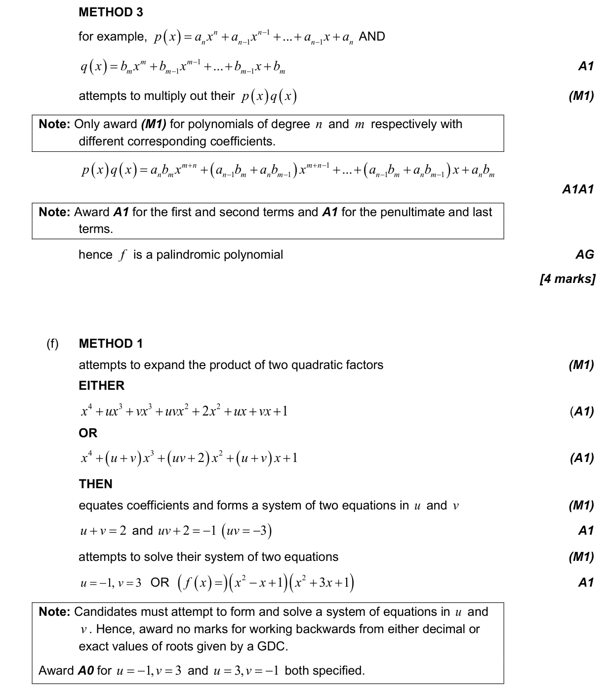
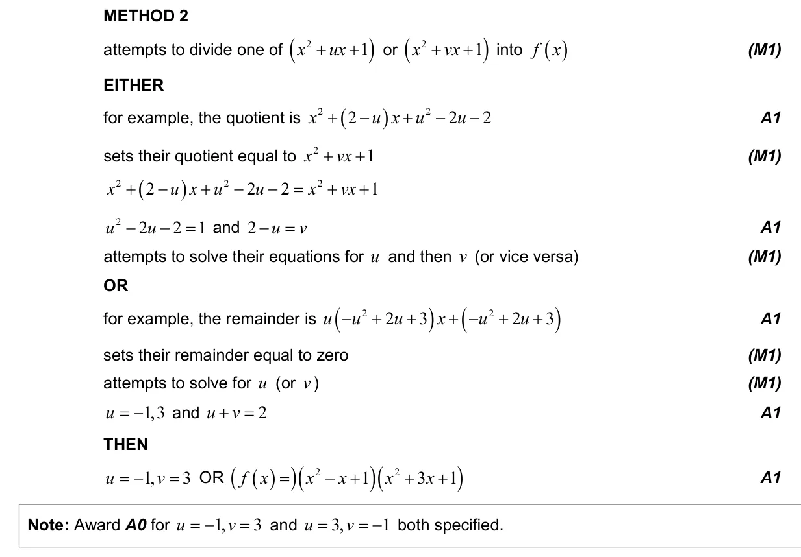
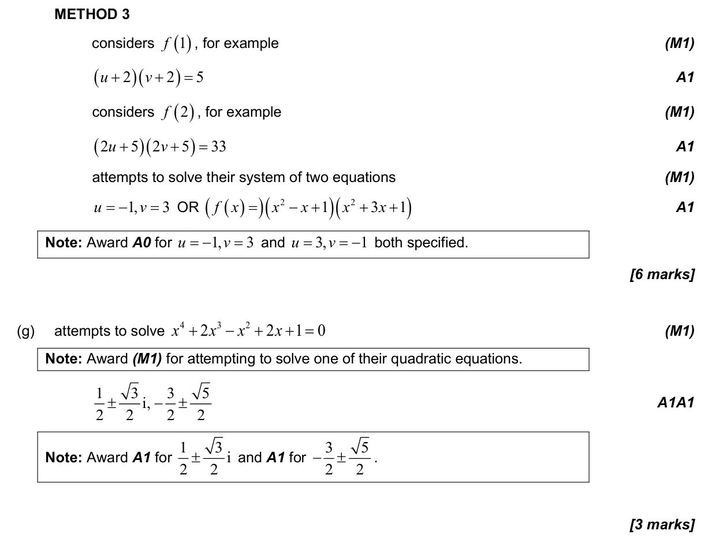
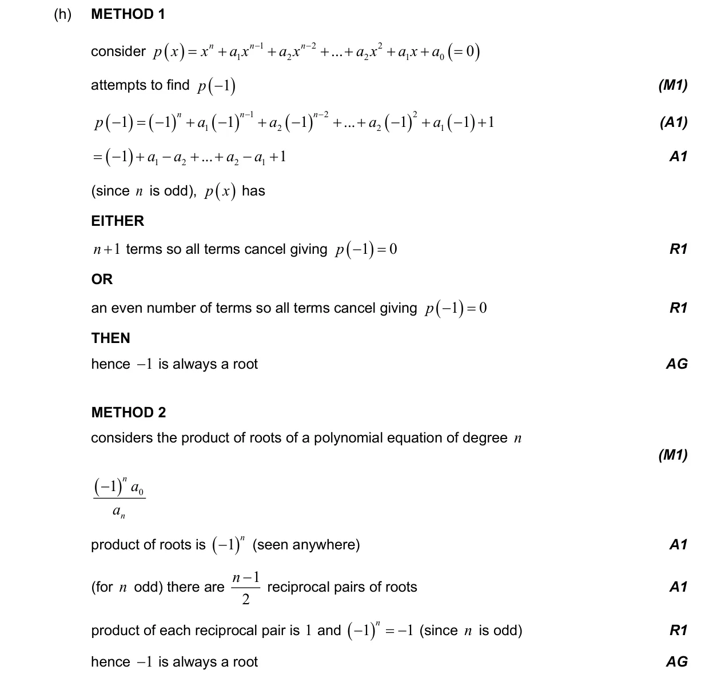
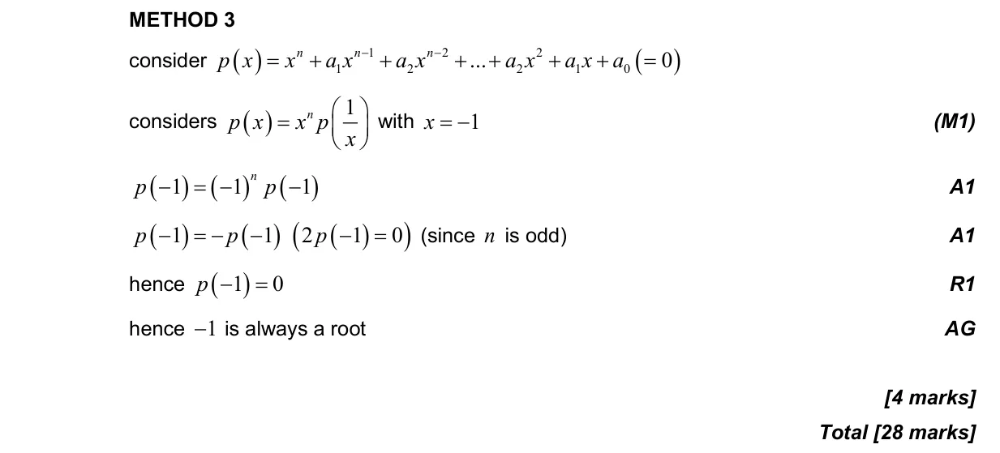